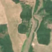
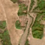

1,3 ha · La Spăhaia, com. Bara
văzută schimbată prima dată pe 15 aug. 2026


Nu am găsit nicio autorizație de tăiere în jur.
Terenul: în afara amenajamentelor silvice publicate (pășune, mal de apă sau pădure privată fără amenajament în registru).
Ce se vede în poze: În poza detaliată din 2021, zona marcată avea copaci destul de deși, dar cu mici goluri, la marginea unui câmp. În «după», zona e golă și maronie, în timp ce pădurea de alături a rămas verde, deci copacii par să fi fost tăiați.